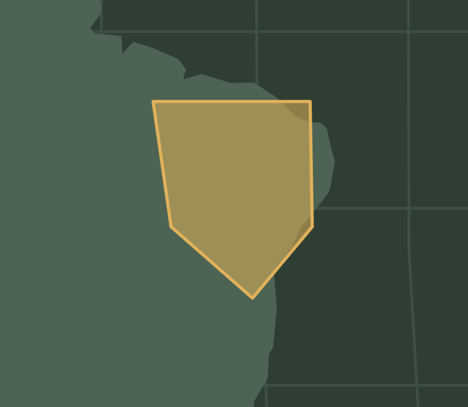

Preparado · Bebida ritual · Nordeste de Brasil
Vino de jurema
Mimosa tenuiflora (jurema preta) (Willd.) Poir.
El vino de jurema (vinho da jurema, ajucá) es una bebida ritual del nordeste de Brasil, preparada con la jurema preta, árbol nativo del semiárido. Se asocia a pueblos indígenas, al catimbó y a religiones juremeiras, y se prepara de forma reservada, solo conocida por quien pasó el bautismo.123
También se llamavinho da jurema · ajucá · jurema sagrada (religión) · juremahuasca (variante con ayahuasca)
- Qué es
- Bebida ritual de las religiones juremeiras
- Territorio
- Nordeste de Brasil, semiárido
- Parte usada
- Planta de jurema preta; preparación reservada
- Principios activos
- DMT en la planta, según la literatura
- Empieza y dura
- No aplica
- Quién guarda su memoria
- Pueblos del nordeste, catimbó, umbanda y Jurema Sagrada
La planta
Jurema preta
En Brasil se llama jurema a varias plantas, bebidas y religiosidades; entre los árboles destaca la jurema preta (Mimosa tenuiflora), planta nativa del semiárido nordestino.4
Es un arbusto o árbol pequeño de la familia Fabaceae, de hojas parecidas a helechos, conocido en México como tepezcohuite, con área natural desde el nordeste de Brasil hasta el sur de México.7
Un maestro pankararé explicó que el vino solo se hace con jurema-de-caboclo, variedad sin espinas de la jurema preta.8
Un estudio etnofarmacobotánico describe el vino de las religiones afrobrasileñas preparado con Mimosa hostilis y M. tenuiflora, con aditivos psicoactivos.5
Ficha descriptiva: no incluye instrucciones de preparación, que la tradición guarda como reservadas.
- Familia
- Fabaceae
- Nombre popular
- Jurema preta
- Región
- Nordeste de Brasil
- Otro nombre
- Tepezcohuite (México)
Memoria y tradición
De los pueblos indígenas al catimbó
Desde el periodo colonial se registra el uso ritual de la jurema entre pueblos indígenas del nordeste de Brasil.4
Esa práctica reaparece en el catimbó, religiosidad vinculada a aquellos ritos, que la umbanda alcanzó a mediados del siglo XX, y en la reciente Jurema Sagrada.14
Se citan entre los pueblos que la usaron los kariri, tusha, fulniô, pankararu, acroá, guegue, atanaye y pimenteira, según una síntesis divulgativa.7
Los primeros escritos sobre el uso ritual aparecen en los años treinta, con Mário de Andrade y la Misión de Investigaciones Folclóricas.6
En 1945, Roger Bastide describió un ritual de catimbó y ratificó su origen indígena; otros autores lo ven como confluencia de brujería ibérica, farmacopea indígena y ritmos bantúes.6
Hay pocas referencias antiguas, probablemente por la represión de la época colonial, y solo quien pasó el bautismo sabe cómo se hace el vino.2
Un artículo reciente invita a mirar más allá de lo psicoactivo, hacia las mediaciones rituales del uso.10
En el tiempo
Primeros registros del uso ritual entre pueblos indígenas
Primeros escritos sobre la jurema
Bastide describe un ritual de catimbó
Sus nombres
- vinho da jurema
- portugués
- ajucá
- nombre indígena
Territorio y cuidado
Nordeste de Brasil

Qué ayuda
- Respetar el carácter reservado de la preparación.
- Reconocer a los pueblos y comunidades que la guardan.
- Citar a los autores indígenas y brasileños.
Qué contiene
DMT y otros compuestos
La literatura considera el vino un enteógeno por la presencia del alcaloide indólico N,N-dimetiltriptamina (DMT).2
Se cita que Mimosa tenuiflora contiene hasta un 1 % de DMT, y que en 2005 se aisló la yuremamina, un fitoindol cuyo aporte a los efectos se desconoce.7
Al saber que la jurema contiene mucho DMT, psiconautas de fuera de Brasil la han mezclado con otra planta de Oriente en una bebida llamada juremahuasca.1
La experiencia
Transe y mundo espiritual
Un estudio afirma que el vino propicia el transe de incorporación en rituales de umbanda y candomblé dedicados a la entidad Jurema.5
En el catimbó, el maestro catimbozeiro vive un estado místico que incluye la dimensión alucinógena, según un análisis literario.9
Esquema orientativo: cambia con la preparación, la cantidad y la persona.
Investigación
Qué se ha estudiado
El Instituto del Cerebro de Natal exploró el DMT extraído de la jurema preta para depresión resistente al tratamiento, según una entrevista.11
La antropología ha estudiado las religiones juremeiras, aunque hasta los años noventa recibieron poca atención.6
Alcance de estos datosEstudios etnográficos y fitoquímicos; la investigación clínica con DMT de jurema es incipiente.
Con cuidado
Lo que conviene saber antes
Para seguir
Libros y medicinas emparentadas
Fuentes
De dónde sale cada dato
- Revista Brasileira (cejsh). Artículo sobre jurema y religiosidades, 2020. cejsh.icm.edu.pl.
- Santos, N. A. Disertación sobre fitoquímica de las Mimosa conocidas como jurema, Universidade de Brasília. repositorio.unb.br/bitstream/10482/54824/1/NayaraAlvesSantos_DISSERT.pdf.
- Artículo sobre jurema y religiosidades (redalyc). redalyc.org/journal/2433/243364810019/243364810019.pdf.
- Artículo sobre jurema, 2020. cejsh.icm.edu.pl, resumen en portugués e inglés.
- Revista Nures 26, 2014. Contribuição ao estudo etnofarmacobotânico do vinho da jurema. revistas.pucsp.br/index.php/nures/article/download/24694/17574/64166.
- Universidade de São Paulo. Texto sobre jurema. ea.fflch.usp.br/sites/ea.fflch.usp.br/files/inline-files/Jurema.pdf.
- Ethnoco. Mimosa tenuiflora (syn. hostilis) ~ Jurema. medium.com/ethnoco/mimosa-tenuiflora-syn-hostilis-jurema-98c532635b21.
- Chacruna. How Jurema helped the Pankararé people recover their land. chacruna.net/this-is-how-jurema-a-dmt-containing-tree-helped-the-pankarare-people-recover-their-land-in-brazil/.
- Moara, Universidade Federal do Pará. Artículo sobre jurema y catimbó. periodicos.ufpa.br/index.php/moara/article/download/21318/13559.
- Barreto, M. V. Para além da questão psicoativa. Revista Brasileira de História das Religiões, 2024. periodicoseletronicos.ufma.br.
- Chacruna. The Enchanted Science of Jurema. chacruna.net/?p=129611.
- Mapa APDER, con datos de Natural Earth · dominio público
- Dibujos de moléculas APDER
Última revisión: 24 de noviembre de 2026. Si ves un error, escríbenos a info@apder.org.